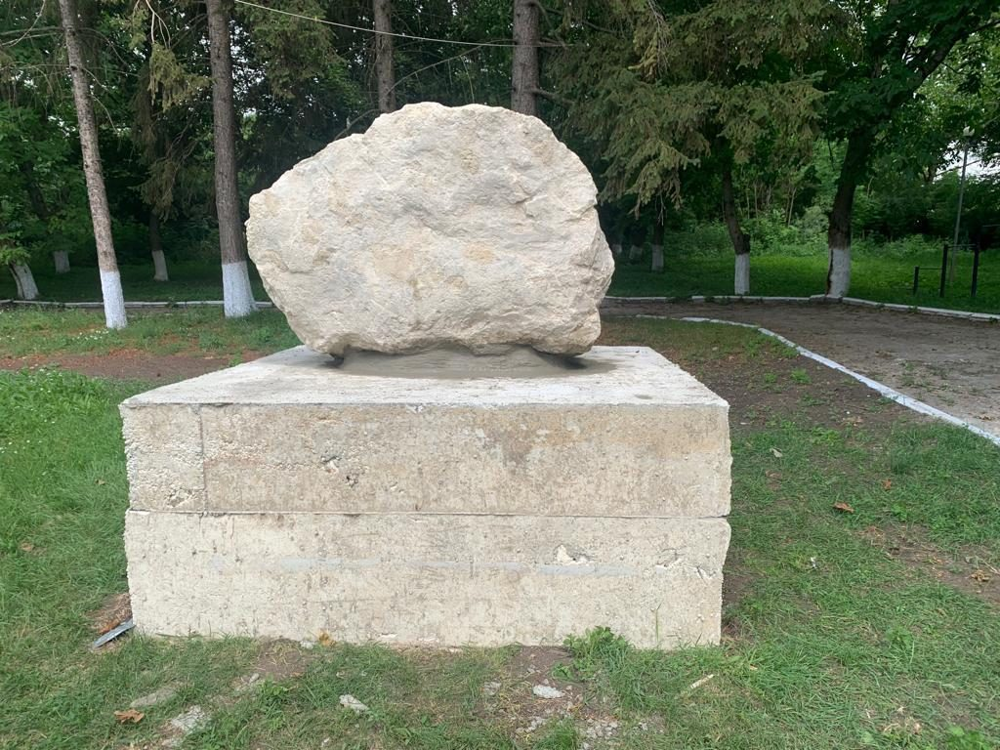

Cepeleuti Holocaust Memorial
In memory of the 189 Jews from Cepeleuti and other localities, תנצב״ה, mercilessly killed in the town of Cepeleuti on July 6-7, 1941. This memorial was erected with the efforts and thanks to the brothers Leon and Efim Akkerman and the LivingStones Association.
To support the work of LivingStones please consider making a donation
DonateBackground
According to the census of 1930, the village of Cepeleuţi was in Judetul Hotin within the borders of the Kingdom of Romania. Today, this town belongs to the Edinets district in the Republic of Moldova. The town changed its name several times following the authority that governed it. As a result, Cepeleuti was known under the Russian Empire, the Romanian government, and the Soviet Union as Chepeleutsy, Chepeleuts’, and Chepeliutsy. The Jews had their own pronunciation in Yiddish.
According to The Jewish Population in Bessarabia and Transnistria - Geographical Dictionary[1], 163 Jews out of 1,555 lived in Cepeleuti in 1897. In 1924 there were already 13 Jewish businesses. In 1930 the town was home to 175 Jews, about 6% of the 2828 inhabitants. The Jews were mostly merchants and craftsmen. For many years Rabbi Yona Forman was the leader of this congregation. In the 1930s the Jews of Cepeleuţi suffered greatly at the hands of members of the Iron Guard during the anti-Semitic reign of Goga-Kuza.[2]
In the “Cepeluti” Encyclopedia of Jewish Communities in Romania, Volume 2 (Cepeleuţi, Moldova)[3], we learn the governing authorities in 1940 did not subject Jewish residents to any harm. Following the retreat of Soviet troops, four Ukrainian locals formed a criminal gang. Amongst those present was Nikolai Dabija, who served as the secretary of the municipal council. Together, they sought the officers of the Romanian army units to secure weapons and clearance to attack Jews.
Following the arrival of Romanian troops, a massacre of the local Jews took place on July 6-7, 1941. Romanian authorities initiated the event. It was carried out by Romanian soldiers, a dozen Cepeleuți inhabitants (including two women), and several non-Jewish residents of Rotunda. The moment the Romanian army entered the town, some locals stepped up to show the houses of Jewish locals to execute them. Armed perpetrators hunted down and killed adults and children throughout the place. The Romanian troops rounded up the Jews of Cepeleuţi going from door to door, confiscated all their valuables, and relocated them to a site approximately one kilometer from the village, coercing them into digging a large pit. The massacre centered on the “State mill” on the outskirts of town, the cellar of the former Cepeleuți drugstore, and the Valeia lui Tǎnas forest. The 189 victims included Jewish residents from Corjeuți, Edineț, and Lipcani, who were in Cepeleuți. The residents buried the bodies in four mass graves after the killings.[4]
The Romanian soldiers shot every single person without exception. Before the executions, they coerced a Jewish girl into dancing naked in front of the pit and tossed newborns back and forth before shooting them. This killing operation was witnessed by many townspeople. According to a ChGK report, the execution was orchestrated by the captain of the 7th Romanian Cavalry Regiment.[5]
Shortly after the shooting of the Jews of Cepeleuți and the surrounding villages on July 6-7, 1941, some locals were ordered to gather the bodies of the victims and bury them in four mass graves. [6]Later, the Jewish belongings and valuables were divided among the villagers.
The only Jewish residents that survived were two young girls who had been away from the village and a young boy hidden by a Christian neighbor. After the war, the three young people returned to Cepeleuti for a short while, as well as a former resident who had departed before the war and returned following their liberation. He had the means to finance a fence surrounding the burial site but did not erect a headstone.
The liberation of Cepeleuți took place in March 1944 with the help of the Red Army.
[2] http://iajgscemetery.org/eastern-europe/moldova-inc-transnistria-region/cepelutzi-cepeleui-hotin
[3] https://www.jewishgen.org/yizkor/pinkas_romania/rom2_00394a.html
[4] https://collections.yadvashem.org/en/untold-stories/community/14622405
[5] https://collections.yadvashem.org/en/untold-stories/killing-site/14627650
[6] https://collections.yadvashem.org/en/untold-stories/community/14622405
Further References
Map location of Mass Graves in Cepeleuti. Source: Yahad in Unum http://www.yahadinunum.orgwww.yahadmap.org/#map/q_village.Cepeleuti/q_pays.5/
The Murder Story of Cepeleuți Jews at the Cepeleuți State Mill Dam. Source: Yad Vashem https://collections.yadvashem.org/en/untold-stories/killing-site/1462765
The Murder Story of Cepeleuți Jews in the Cellar of a Former Drugstore in Cepeleuți. Source: Yad Vashem
https://collections.yadvashem.org/en/untold-stories/killing-site/14627650
The Murder story of Cepeleuti Jews in the Valeia-lui-Tǎnas Forest Souce: Yad Vashem
https://collections.yadvashem.org/en/untold-stories/killing-site/14627652
Romanian
Conform recensământului din 1930, satul Cepeleuţi se afla în Județul Hotin în interiorul granițelor Regatului României. Astăzi, acest oraș aparține de districtul Edineț din Republica Moldova. Orașul și-a schimbat de mai multe ori numele în funcție de autoritatea care îl guverna. Ca rezultat, Cepeleuţi a fost cunoscut sub numele de Chepeleutsy, Chepeleuts’ și Chepeliutsy în timpul Imperiului Rus, guvernului român și Uniunii Sovietice. Evreii aveau propria lor pronunție în limba idiș.
Potrivit cărții "Populația evreiască din Basarabia și Transnistria - Dicționar geografic", în anul 1897, în Cepeleuţi trăiau 163 de evrei dintr-un total de 1.555 de locuitori. În anul 1924, existau deja 13 afaceri evreiești. În 1930, orașul găzduia 175 de evrei, aproximativ 6% din cei 2.828 de locuitori. Evreii erau în mare parte comercianți și meșteșugari. Timp de mulți ani, rabinul Yona Forman a fost liderul acestei congregații. În anii '30, evreii din Cepeleuţi au suferit în mod semnificativ în timpul domniei antisemite a lui Goga-Kuza, sub mâinile membrilor Gărzii de Fier.
În "Enciclopedia comunităților evreiești din România, Volumul 2 (Cepeleuţi, Moldova)", aflăm că autoritățile guvernante din 1940 nu au supus rezidenții evrei niciunei daune. După retragerea trupelor sovietice, chîțiva localnici au format o bandă criminală. Printre cei prezenți se afla Nikolai Dabija, care a servit ca secretar al consiliului municipal. Împreună, ei au căutat ofițerii unităților armate române pentru a obține arme și permisiunea de a ataca evreii.
După sosirea trupelor române, un masacru al evreilor locali a avut loc în zilele de 6-7 iulie 1941. Evenimentul a fost inițiat de autoritățile române și a fost executat de soldați români, câțiva locuitori din Cepeleuţi (inclusiv două femei) și câțiva rezidenți non-evrei din Rotunda. În momentul în care armata română a intrat în sat, unii localnici s-au oferit să arate casele locuitorilor evrei pentru a-i executa. Colboraționiștii înarmați i-au vânat și ucis pe adulți și copii în întregul sat. Trupele române au strâns evreii din Cepeleuţi de la ușă la ușă, le-au confiscat toate bunurile de valoare și i-au mutat într-un loc situat aproximativ la un kilometru de sat, constrângându-i să săpe o groapă mare. Masacrul s-a concentrat în zona "Fabricii de stat" la periferia orașului, în pivnița fostei farmacii din Cepeleuţi și în pădurea Valeia lui Tănas. Cei 189 de victime includ rezidenți evrei din Corjeuţi, Edineț și Lipcani, care se aflau în Cepeleuţi. Localnicii au înmormântat cadavrele în patru gropi comune după execuții.
Soldații români și colaboraționiștii au împușcat fiecare persoană fără excepție. Înainte de execuții, au constrâns o fată evreică să danseze goală în fața gropii și au aruncat copii nou-născuți în sus și în jos înainte de a-i împușca. Această operațiune de ucidere a fost martorită de mulți locuitori. Potrivit unui raport ChGK, execuția a fost orchestrată de către căpitanul Regimentului de Cavalerie Română nr. 7.
La scurt timp după execuția evreilor din Cepeleuţi și din satele învecinate în zilele de 6-7 iulie 1941, unii localnici au primit ordin să adune cadavrele victimelor și să le îngroape în patru gropi comune. Mai târziu, bunurile și valorile evreiești au fost împărțite între colaboraționiști și unii locuitori.
Singurii rezidenți evrei care au supraviețuit au fost două fete tinere care nu se aflau în sat și un băiat mic ascuns de un vecin creștin.
După război, cei trei tineri s-au întors la Cepeleuţi pentru o perioadă scurtă de timp, precum și un fost locuitor care plecase înainte de război și s-a întors după eliberarea lor. Acesta din urmă avea resursele financiare pentru a finanța o gardă în jurul locului de înmormântare, dar nu a ridicat o piatră funerară.
După datele Arhivei de stat 310 evrei , ai satului Cepeliuț, care sau ascuns, s-au plecase din sat au închiși în lagăre de concentrare.
Eliberarea statului Cepeleuţi a avut loc în martie 1944 cu ajutorul Armatei Roșii.
După eliberarea Moldovei sau făcut cercetări , de către organele de stat sovietice, asupra crimelor săvârșite de fasciști și colaboraționiști.
În satul Cepeleuţi au fost exhumate cadavrele evreilor executați și au fost reînhumate în cimitirul evreiesc.
Unii colaboraționiști au fost judecați la ani de închisoare.
Russian
Согласно переписи населения 1930 года, село Чепелёуцы находилось в Хотинском уезде в пределах Королевства Румыния. В настоящее время это местечко принадлежит району Эдинец в Республике Молдова. Название города неоднократно менялось в зависимости от власти, управлявшей им. Так, Чепелёуцы были известны под именами Чепелёутсы, Чепелёутс и Чепелиутсы в период Российской империи, румынского правительства и Советского Союза. У евреев было свое произношение на идише.
Согласно книге "Еврейское население Бессарабии и Транснистрии - Географический словарь", в 1897 году в Чепелёуцах проживали 163 еврея из общего числа 1 555 жителей. В 1924 году уже действовало 13 еврейских предприятий. В 1930 году в городе проживало 175 евреев, что составляло около 6% от общего числа 2828 жителей. Евреи в основном были торговцами и ремесленниками. Многие годы руководителем этой общины был раввин Йона Форман. В 1930-х годах евреи Чепелёуцов сильно пострадали от членов Железной гвардии во время антисемитского режима Гоги-Кузы.
В "Энциклопедии еврейских общин Румынии, Том 2 (Чепелёуцы, Молдова)" указано, что власти в 1940 году не подвергали жителей еврейской национальности никаким вредоносным действиям. После отступления советских войск, четверо украинских местных жителей создали преступную банду. Среди присутствующих был Николай Дабия, который служил секретарем муниципального совета. Вместе они искали офицеров румынских армейских подразделений, чтобы обеспечить оружием и разрешением на нападение на евреев.
После прибытия румынских войск 6-7 июля 1941 года произошло убийство местных евреев. Событие было инициировано румынскими властями и осуществлено румынскими солдатами, десятком жителей Чепелёуцов (включая двух женщин) и несколькими нежидовскими жителями Ротунды. В момент вхождения румынской армии в город, некоторые местные жители предложили указать дома евреев для их казни. Вооруженные преступники преследовали и убивали взрослых и детей во всем поселке. Румынские войска собрали евреев Чепелёуцов, ходили от дома к дому, конфисковали все их ценности и переселили их на место, находившееся примерно в одном километре от деревни, заставляя их рыть большую яму. Массовое убийство происходило в районе "Государственной мельницы" на окраине города, в подвале бывшей аптеки Чепелёуцов и в лесу Валея луй Танас. В числе 189 жертв были еврейские жители из Коржеут, Эдинец и Липкань, которые находились в Чепелёуцах. После убийств местные жители захоронили тела в четырех массовых могилах.
Румынские солдаты расстреливали каждого человека без исключения. Перед казнью они заставили еврейскую девочку танцевать голой перед могилой и подкидывали младенцев вверх и вниз перед тем, как расстреливать их. Эту операцию по убийству наблюдали многие жители города. Согласно отчету ЧГК, казнь была организована капитаном 7-го румынского кавалерийского полка.
Незадолго до расстрела евреев Чепелёуцов и окружающих деревень 6-7 июля 1941 года некоторым местны
Location and QR Code
Testimonials
Learn about what happened to the Jews in Cepeleuti from local witnesses. Here are their memories and recollections.
There were no Jewish survivors, the ones who survived were not in Cepeleuti on those days.
Additional references
Testimonial by Vasile Morei
https://collections.ushmm.org/search/catalog/irn45543
Testimonial by Vera Cebotari
https://collections.ushmm.org/search/catalog/irn45538
Testimonial from Filip C. Source: Yahad In Unum
http://www.yahadinunum.orgwww.yahadmap.org/#village/cepeleu-i-edine-moldova.840
Learn more Source: Yad Vashem
Below there are four testimonials. They are the oral history interviews conducted and published The United States Holocaust Memorial Museum.
Yuri Zagorcea got acquainted with the materials in the archive and then spoke with the witnesses of those events.
Victims
List of murdered Jews from Cepeleuti (43 local residents and 55 residents of surrounding villages), from 06/07/1941 to 07/07/1941
-
Sources: https://collections.yadvashem.org/en/documents/5730892
-
Records of the Extraordinary State Commission to Investigate German-Fascist Crimes Committed on Soviet Territory
-
National Archive of the Republic of Moldova (ANRM), Copy YVA 14616973
-
National Archive of the Republic of Moldova (ANRM), Copy YVA 14616975
-
A ChGK list of the Jews buried in grave #2 on the western outskirts of Cepeleuți
-
National Archive of the Republic of Moldova (ANRM), Copy YVA 14616973
-
https://collections.yadvashem.org/en/untold-stories/commemoration/14625860
-
Information found in "Light a candle on Victory Day" by Mikhail Becker
-
Kleyman Elik Șleymovici 75 de ani
-
Kleyman Reiza Moiseevna 70 de ani
-
Kleyman Boris Elikovici 30 de ani
-
Kleyman Sonia Moiseevna 28 de ani
-
Kleman (?) Borisovna 3 ani
-
Kleiman Abram Elikovici 40 de ani
-
Kleiman Sonia Borisovna 31 de ani
-
Kleyman Idel Abramovna 15 ani
-
Kleiman (?) Abramovna 13 ani
-
Kleiman (?) Abramovici 8 ani
-
Kleyman Mola Șlemovna 28 de ani
-
Kleyman Iașa Semenovici 5 ani
-
Kleiman Izraili Șlemovici 70 de ani
-
Kleyman Rîdoka Șlemovna 68 de ani
-
Kleyman Ida Izrailevna 27 de ani
-
Kleiman Peșa Izrailevna 24 de ani
-
Kleyman Jisla Izrailevna 22 de ani
-
Kleiman (?) Izrailevici 25 de ani
-
Kleiman Iosif Șlemovici 60 de ani
-
Kleyman Frida Șlemovna 58 de ani
-
Dorfman David Iosifovici 12 ani
-
Neselman Braina Iosifovna 58 de ani
-
Tolpolar Șlema Iosifovici 30 de ani
-
Tolpolar Liza Iosifovna 25 de ani
-
Grinberg Citla Ițikovna 55 de ani
-
Grinberg Ita Meerovna 22 de ani
-
Grinberg Kvela Meerovna 20 de ani
-
Dorfman Sara Leibovna 70 de ani
-
Dorfman Berko Davidovici 64 de ani
-
Grinberg Aron Iakelevici 28 de ani
-
Grinberg Maria Berchovna 26 de ani
-
Grinberg Fryda Aronovna 5 ani
-
Gru Peisin Isakovici 70 de ani
-
Gru Hanța Ițikovici 65 de ani
-
Gru Șleoma Peisikovici 24 de ani
-
Gru Berta Peisikovna 30 de ani
-
Gru Roza Peisikovna 3 ani
-
Liuterman Tuba Leizovna 68 de ani
-
Liuterman Șeiva Leizovna 40 de ani
-
Liuterman Maria Leizovna 37 de ani
-
Liuterman Vladimir Leizovici 1 an
-
Liuterman Mokc Leizovici 38 de ani
-
Traci Idel 28 de ani
-
Traci (?) 28 de ani
-
Traci (?) 25 de ani
-
Traci (?) 5 ani
-
Waisbrod Pavel Ițkovici 48 de ani
-
Waisbrod Șeila Ițkovna 35 de ani
-
Rofman Estra Ițkovna 30 de ani
-
Rofman Ita Haimovna 6 ani
-
Litvak Moșka (?) 60 de ani
-
Litvak Braina (?) 58 de ani
-
Litvak Ida Moșkovna 18 ani
-
Șterenberg Șeina Moiseevna 20 de ani
-
Șterenberg Mința Moiseevici 18 ani
-
Șterenberg Șleoma Moiseevici 15 ani
-
Rosenthali Moișe (?) 70 de ani
-
Fraifeld Șleoma (?) 30 de ani
-
Fraifeld Sonea Meerovna 26 de ani
-
Wainștein Leizer Antenarovici 32 de ani
-
Wainstein Fanea Mironovna 30 de ani
-
Vaiman Leibaș Ihilovici 65 de ani
-
Vaiman Ida Zeidovna 63 de ani
-
Goldenberg Reiza Ițikovna 27 de ani
-
Lugerman Liuba (?) 65 de ani
-
Tolpolar (?) (farmacist din Edineț) 60 de ani
-
Tolpolar (soția sa) 60 de ani
-
Lerner (?) (Edineț) 50 de ani
-
Lerner (?) (soția sa) 50 de ani
-
Lerner (?) (Balți) 30 de ani
-
Kaner (?) (s. Corjeuți) 30 de ani
-
Kaner Sonea Abramovna 28 de ani
-
Rabinovici Moișa Srulevici 66 de ani
-
Rabinovici Serna (?) 63 de ani
-
Babancik Gherș Iankelevich 75 de ani
-
Babancik Leia (?) 66 de ani
-
Vaiserman Șima Aizikovici 69 de ani
-
Vaiserman Brama Abramovna 65 de ani
-
Vaiserman Sruli Șimonovici 40 de ani
-
Vaiserman Maia Șlemovna 35 de ani
-
Vaiserman Reiza Srulevna 11 ani
-
Vaiserman Zlota Srulevna 9 ani
-
Vaiserman Soia Srulevna 5 ani
-
Vaiserman Șlema Srulevna 1 an
-
Șterenberg Boris Elikovici 55 de ani
-
Șterenberg Monea Elikovici 40 de ani
-
Șterenberg Mințea Borisovna 19 ani
-
Șterenberg Sura Borisovna 15 ani
-
Șterenberg Hova Borisovna 13 ani
-
Șterenberg Pinea Borisovici 8 ani
-
Șmaiser Sara Elikovna 46 de ani
-
Șmaiser Mința Isakovna 18 ani
-
Nesiliman Mina Meerovna 25 de ani
-
Nesiliman Sara Meerovna 22 de ani
-
Galanter Beima Moiseevna 32 de ani
Osămintele a 94 de jertfe , n-au putut fi identificate, fiindcă erau veniți din alte localități.
The remains of 94 victims could not be identified, because they came from other localities.